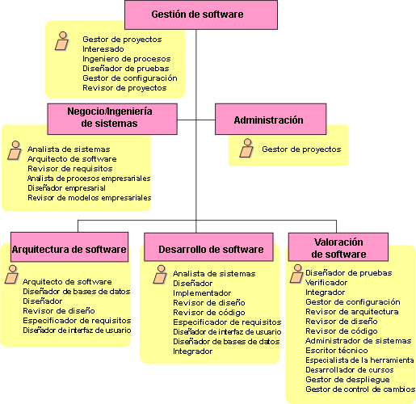
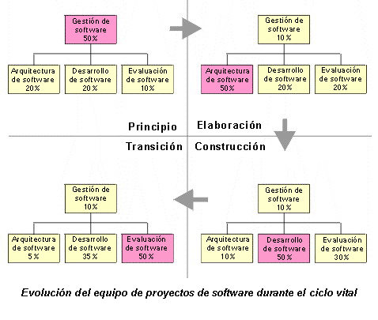

| Directriz: Plan de desarrollo de software |
 |
|
| Elementos relacionados |
|---|
Determinación de la longitud de cada iteraciónHemos definido una iteración como un miniproyecto bastante completo, que pasa por todas las disciplinas principales y resulta en la mayoría de casos en un sistema ejecutable, aunque incompleto: un release. Aunque el ciclo [editar, compilar, probar, depurar] suena como una iteración, no es lo que queremos decir aquí. Las compilaciones diarias o semanales que integran cada vez más, y prueban más y más elementos del sistema, también pueden parecer una iteración, pero sólo es una porción de una iteración, tal como se utiliza aquí este término. Una iteración empieza con la planificación y los requisitos, y acaba con un release, interno o externo. La rapidez de la iteración depende principalmente del tamaño de la organización de desarrollo. Por ejemplo:
Otros factores entran en juego: el grado de familiaridad de la organización con el enfoque iterativo, incluyendo el hecho de disponer de una organización estable y madura, el nivel de automatización que utiliza el equipo para gestionar el código (por ejemplo, CM distribuida), distribuir información (por ejemplo, web interna), pruebas automatizadas, etc. Tenga en cuenta que también hay unos ciertos gastos generales fijados en una iteración, en la planificación, sincronización, análisis de los resultados, etc. Así que, por un lado, convencido de las tremendas ventajas del enfoque repetitivo, puede que esté tentado de repetir furiosamente, aunque los límites humanos de la organización ralentizarán su fervor. Algunos datos empíricos:
Una vez que tenga una idea del número de iteraciones del plan sin detallar, deberá definir el contenido de cada iteración. También es una buena idea encontrar un nombre o un título para calificar el producto que tiene al final de cada iteración, para ayudar a obtener un enfoque más claro.
Determinación del número de iteracionesUn proyecto muy simple puede tener sólo una iteración por fase:
Para un proyecto más sustancial, en el ciclo de desarrollo inicial la norma sería:
Para un proyecto grande, con muchos aspectos desconocidos, nuevas tecnologías, etc., se puede producir:
Durante el ciclo de desarrollo, tenemos:
Así pues, en general, planee tener entre tres y diez iteraciones. Tenga en cuenta, sin embargo, que los límites superior e inferior connotan circunstancias inusuales, así que la mayoría de desarrollos utilizarán entre seis y ocho iteraciones. Son posibles muchas variaciones dependiendo de los riesgos, el tamaño y la complejidad:
Alineación de la secuencia de revisión de cascada tradicional con el enfoque iterativoLa secuencia de revisión por omisión para un proyecto de ciclo de vida en cascada tiene una revisión única principal de productos de trabajo importantes, por ejemplo:
En Rational Unified Process, las partes de los productos de trabajo equivalentes se revisan a medida que se completan en cada iteración, pero los hitos principales (y, por lo tanto, las revisiones) se alinean con la terminación de las fases, el inicio, la elaboración, la construcción y la transición. Un gestor de proyectos que desee adoptar RUP tendrá que encontrar un modo de reconciliar este conflicto aparente, debido a obligaciones contractuales. Idealmente, el gestor de proyectos debe convencer al cliente de que el enfoque basado en fases e iteración en realidad proporciona una visibilidad real superior en el progreso del proyecto, reduce riesgos, para que no exista necesidad de SRR, SSR, etc. Sin embargo, esto no siempre es posible, y el gestor de proyectos debe planificar estas revisiones en los puntos apropiados. Es posible, en RUP, ubicar los puntos en que estos productos de trabajo importantes (en realidad, sus equivalentes en RUP) están prácticamente completados, aunque esto no siempre se alinea a la perfección con fases o iteraciones. Esto se realiza considerando que el esfuerzo relativo que se gastará en requisitos, diseño, y similares será aproximadamente el mismo en RUP que en el ciclo de vida de cascada (ideal) - pero que el esfuerzo se distribuirá diferentemente. El resultado es el siguiente:
Para eficacia, el gestor de proyectos, consultando con el cliente, debe intentar combinar estas tres revisiones con las revisiones RUP prescritas. Esto es claramente posible para SRR y PDR, se pueden combinar con Objetivos del ciclo de vida Revisar y Arquitectura del ciclo de vida Revisar, respectivamente. Organización de proyectoAl igual que el proceso de software recibe influencias de las características del proyecto, la organización del proyecto también las recibe. La estructura por omisión presentada aquí (consulte la figura siguiente) tiene que adaptarse para que refleje los efectos o factores como los que se listan:
Estos son factores distintivos clave al analizar cómo, en conjunto, la organización debe adoptar un nuevo proceso de desarrollo. Aquí examinaremos su efecto en la elección de la estructura del proyecto. La figura siguiente presenta una organización de proyecto por omisión, mostrando como se asignan las responsabilidades a la estructura del equipo.  Figura que muestra la organización por omisión del proyecto. Tenga en cuenta que la antigüedad o la autoridad no son significativas en la ordenación de los roles. Esta figura es un punto de partida para considerar cómo se deben correlacionar los roles de nivel de proyecto y las responsabilidades con una estructura de equipos. La figura también sirve para enfatizar qué roles (mostrados en los recuadros amarillos) no son personas, sino "sombreros" que una persona (o equipo) se puede poner en el proyecto. Por este motivo, varios roles (el gestor de proyectos, por ejemplo) aparecen más de una vez. Esto indica que, en algún momento, el comportamiento del gestor de proyectos, tal como se define en RUP, puede aparecer en más de un equipo. Por ejemplo, en un proyecto más grande, la tarea de preparar un informe de estado basado en una estructura detallada de trabajo se puede delegar a una persona del equipo de administración. Sin embargo, esta es una responsabilidad que RUP asigna al rol denominado gestor de proyectos. En un proyecto pequeño, es probable que una persona nombrada gestor de proyectos efectúe todas las tareas del rol denominado gestor de proyectos, en cuyo caso el equipo de administración se combina con el equipo de gestión de software. La selección de la estructura del equipo estará influenciada por la naturaleza y el tamaño del proyecto, pero debería matizarse con algunas normas de sentido común:
Los fundamentos de la organización por omisión se discuten largamente en [ROY98]. Concretamente, la asignación de todas las responsabilidades de despliegue para el equipo de valoración de software reconoce que, de todos los equipos del proyecto de desarrollo, el equipo de valoración de software está más expuesto al software tal como lo verá el usuario. Durante la vida de un proyecto, la organización evolucionará para proporcionar soporte a la estructura detallada de trabajo en el plan del proyecto. Esto se muestra en la figura siguiente, que se toma de [ROY98].  Esta evolución enfatiza un conjunto diferente de tareas en cada fase:
La migración entre equipos durante esta evolución garantizará que el conocimiento y las capacidades se mantienen durante el proyecto. Por ejemplo, cuando la elaboración se ha completado, algunos miembros del equipo de arquitectura pueden dispersarse en los equipos de desarrollo, quizás para actuar como líderes de los equipos, o para desarrollar la 'visión' arquitectónica en el desarrollo. Más adelante, hacia el final de la fase de construcción, el enfoque cambia al equipo de valoración, y se desplaza personal del equipo de desarrollo al equipo de valoración. También es importante en este estadio, para evitar la pérdida de integridad arquitectónica en la base de la construcción, que la influencia del equipo de arquitectura no decaiga cuando se mueva el "centro de gravedad" de proyecto. Mover algunos miembros del equipo de arquitectura al equipo de valoración es un modo de hacerlo. |
© Copyright IBM Corp. 1987, 2006. Reservados todos los derechos. |